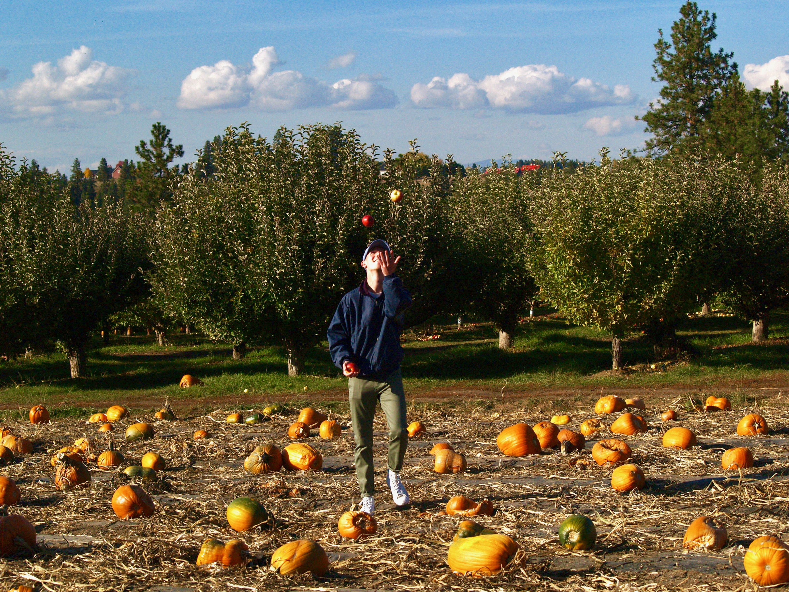

The Seasons
Fall
 Fall, also known as Autumn, usually takes place during the months of September, October, and November. The temperature starts to cool down, the days begin to shorten, and the leaves start changing colors to hues of red, orange, and yellow. This is one of the prettiest times of year, and a great transition period between summer and winter.
Fall, also known as Autumn, usually takes place during the months of September, October, and November. The temperature starts to cool down, the days begin to shorten, and the leaves start changing colors to hues of red, orange, and yellow. This is one of the prettiest times of year, and a great transition period between summer and winter.
“Winter is an etching, spring a watercolor, summer an oil painting and autumn a mosaic of them all.”
– Stanley Horowitz